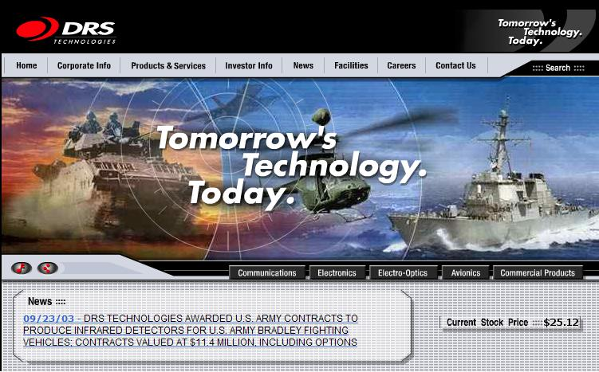
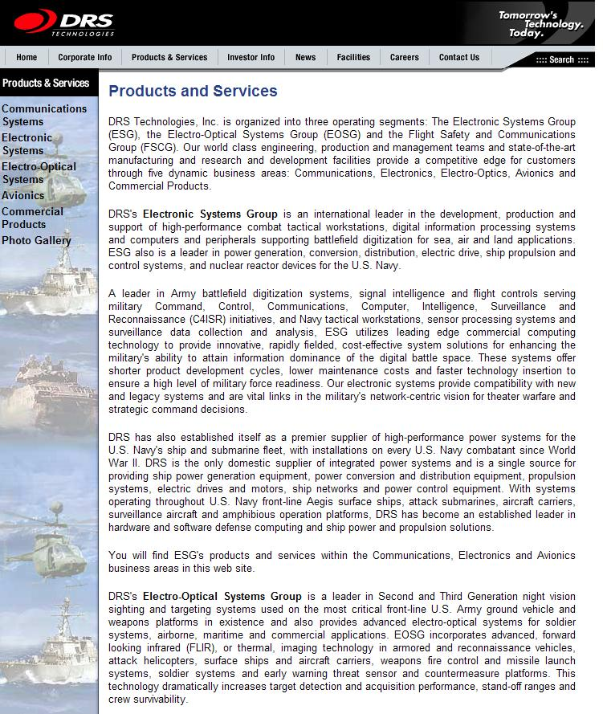
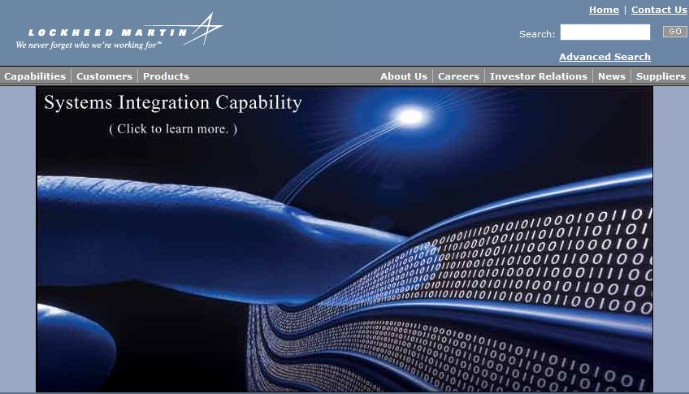
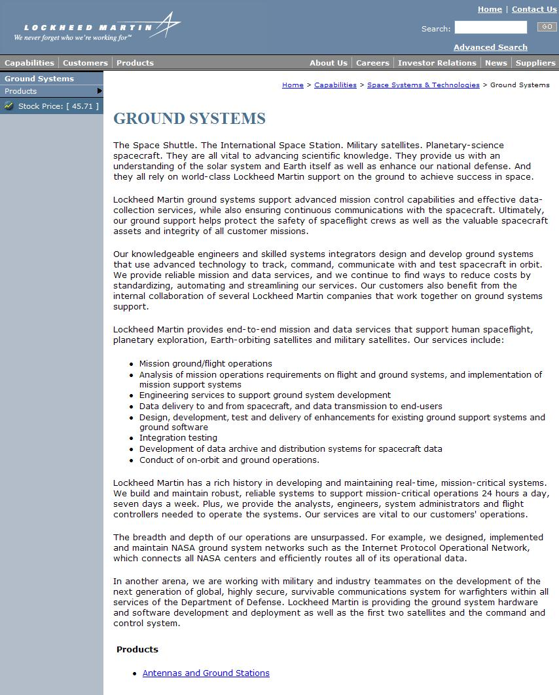
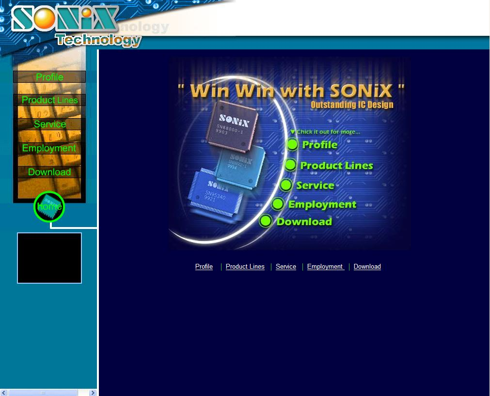
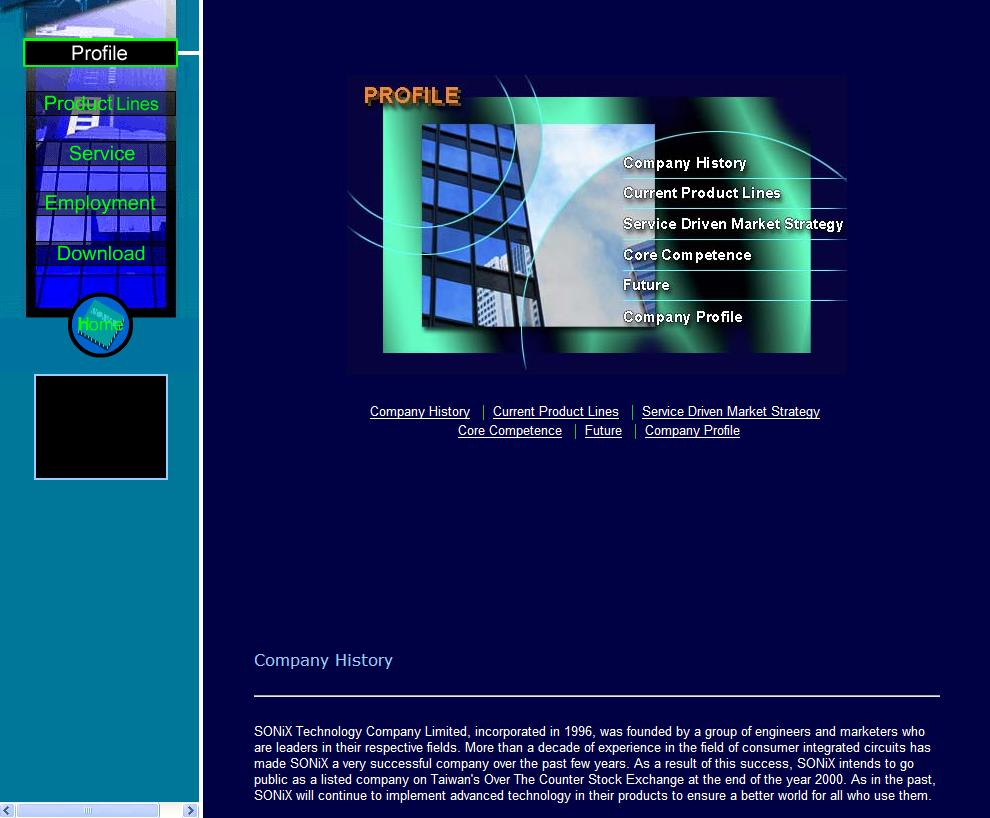

This part of the assignment needs some parameters. First,
The mission of the company is to provide high speed transmission networks and to be an all service provider for small to large businesses. They offer high quality products and services, delivered in a timely manner, backed up with excellent support services. Their main competitive advantage is that, due to their smaller size, they are able to do so at considerably less cost than their competitors.
From my interview with the client, the following are the key impressions the site must visually convey:- leading edge, high technology, state of the art,
- high quality, dependable,
- friendly,
- low cost,
- meteoric growth.
- Which sites do I feel work the best?
- Which sites meet the goals?
- Look for the general layout and design.
- The solutions can be very different.
- There are different ways to present information.
I just looked at the Nasa web site http://www.nasa.gov. The flash video is, to me, literally out of this world. The high technology, state of the art, leading edge goal posts just got moved, somewhere out into the solar system, I suspect. Such a web site is obviously beyond almost all businesses means, and so state of the art is not going to happen. So, just what does state of the art mean anyway?
I am clear I do not know what any of the clients key words actually mean. All right, I know what I think they mean to me, but that is of little consequence. The key question is "What do these words mean to my client?".
Due to the clumsy nature of the language, where inaccuracies were built in from the beginning, there is little point in asking the client with words. However, maybe I can ask him with pictures! I don't need to tell him what I am doing, just that he speaks and I listen, both to his words and his body language.
I need to quantify the key words. So I will present my client with images with varying levels of high tech, leading edge, state of the art, friendly etc and see what he means by these words.
I also need a resolution to the issue of balance between the key words. Some of these words will be very difficult to fully satisfy together as, it appears, they pull in different directions. So, it is not just what does the client mean by the key words. I also need to ascertain how important the different words are in formulating the image to be conveyed, or the relative importance of the key words and their balance.
This, I suspect, will be very difficult and will require many round trips to determine.
I should have asked the client what he meant by some of these words. I should have asked for examples, preferably visual representations, although words would have been of great help.
I have a vision of an image on the home page, colors of the brand, a fibre optic cable, a pulse of light, shadows, digits representing movement of huge amounts of data, speeding along, maybe a satellite image, network hardware, client company HQ, other offices, images not contiguous, all appear to be connected by this beam of light.
The three web sites I have chosen to pursue are the following:DRS Technologies http://www.drs.com


Lockheed Martin http://www.lockheedmartin.com


Sonix Technology http://www.sonix.com.tw/main.htm

